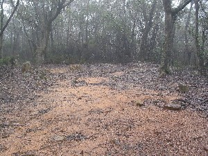
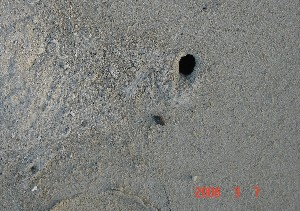

मृत्यु सम्बंधी
ɑkɑle1 आकाले VAR: ɑːkɑːle आऽकाऽले. N सं. death; मृत्यु. SD: death, मृत्यु सम्बंधी, life, जीवन. SEE: ɑkɑle2 ‘die’ ‘मरना आकालेhm:{2}’.
 ɑrɑoɖu आराओडू MORPH: ɑrɑ-oɖu. VAR: ɑrɑ-uɖu आराऊडू. N सं. a ritual observed one month after the death of a deceased; wake; एक प्रकार का कर्मकाण्ड जो किसी के मरने के एक महीने के बाद मनाया जाता है; मरने पर आयोजित होने वाला भोज. SD: ritual, रीति-रिवाज़, death, मृत्यु सम्बंधी.
ɑrɑoɖu आराओडू MORPH: ɑrɑ-oɖu. VAR: ɑrɑ-uɖu आराऊडू. N सं. a ritual observed one month after the death of a deceased; wake; एक प्रकार का कर्मकाण्ड जो किसी के मरने के एक महीने के बाद मनाया जाता है; मरने पर आयोजित होने वाला भोज. SD: ritual, रीति-रिवाज़, death, मृत्यु सम्बंधी.
ɑrɑoɖutɑle आराओडूताले MORPH: ɑrɑ-oɖu-tɑle. N सं. end, of mourning rituals; शोक प्रकट करने के कर्मकाण्डों की समाप्ति. SD: death, मृत्यु सम्बंधी, ritual, रीति-रिवाज़, time, समय.
ɑrɑuɖu आराऊडू MORPH: ɑrɑ-uɖu. N सं. fast observed on the death of a person; किसी व्यक्ति के मरने पर रखा जाने वाला रोज़ा. SD: ritual, रीति-रिवाज़, death, मृत्यु सम्बंधी.
ɑtɛtcɑlo आतैत्चालो MORPH: ɑt-ɛt-cɑlo. N सं. pyre; चिता. SD: death, मृत्यु सम्बंधी.
epʰil एफील N सं. dead person; मरा हुआ व्यक्ति. SD: death, मृत्यु सम्बंधी.
eʈɑpcebɑ एटापचेबा N सं. garland of the skulls of the dear dead worn by mourner; नरमुण्डों की माला जो मातम मनाने वाला पहनता है. SD: death, मृत्यु सम्बंधी, ritual, रीति-रिवाज़.
 |
 ɛpʰoŋ1 ऐफोङ N सं. grave; क़ब्र. SD: death, मृत्यु सम्बंधी. SEE: ɛpʰoŋ2 ‘hole’ ‘छेद ऐफोङhm:{2}’.
ɛpʰoŋ1 ऐफोङ N सं. grave; क़ब्र. SD: death, मृत्यु सम्बंधी. SEE: ɛpʰoŋ2 ‘hole’ ‘छेद ऐफोङhm:{2}’.
 |
 ɛpʰoŋ2 ऐफोङ N सं. hole; छेद. SD: death, मृत्यु सम्बंधी. SEE: ɛpʰoŋ1 ‘grave’ ‘क़ब्र ऐफोङhm:{1}’.
ɛpʰoŋ2 ऐफोङ N सं. hole; छेद. SD: death, मृत्यु सम्बंधी. SEE: ɛpʰoŋ1 ‘grave’ ‘क़ब्र ऐफोङhm:{1}’.
mɑrɑmikʰik मारामीखीक MORPH: mɑrɑ-mikʰ-ik. N सं. deceased; दिवंगत, स्वर्गवासी. SD: death, मृत्यु सम्बंधी.
ŋeburɔŋɔ ङेबूरौङौ N सं. graveyard; कब्रिस्तान. SD: death, मृत्यु सम्बंधी.
oʈmeʈʰɔ ओटमेठौ N सं. grave; कब्र. SD: death, मृत्यु सम्बंधी.
tekʰoimpʰilo तेखोईमफीलो MORPH: tekʰo-impʰilo. ADJ वि. dead; मृत. SD: death, मृत्यु सम्बंधी.
 tokʰepʰotʰerte तोखेफोथेरते MORPH: tokʰe-pʰo-tʰer-te. DEIXIS डीक्सीस. after killing; मार डालने के बाद. SD: death, मृत्यु सम्बंधी.
tokʰepʰotʰerte तोखेफोथेरते MORPH: tokʰe-pʰo-tʰer-te. DEIXIS डीक्सीस. after killing; मार डालने के बाद. SD: death, मृत्यु सम्बंधी.
 utbuliɑ2 ऊत्बूलीआ MORPH: ut-buliɑ. VAR: utumbuliɑ ऊतूमबूलीआ. N सं. songs sung at death; मृत्यु पर गाए जाने वाले गाने. SD: death, मृत्यु सम्बंधी, ritual, रीति-रिवाज़. NT: These songs are sung when someone is going far away. The singing starts two days before the person’s departure. यदि कोई छोड़कर दूर देश जाने वाला हो तब ये गाने जाने से दो दिन पहले से गाये जाने लगते हैं।. SEE: utbuliɑ1 ‘fasting; feast (after fasting)’ ‘रोज़ा; भोज (रोज़ा के बाद) ऊत्बूलीआhm:{1}’.
utbuliɑ2 ऊत्बूलीआ MORPH: ut-buliɑ. VAR: utumbuliɑ ऊतूमबूलीआ. N सं. songs sung at death; मृत्यु पर गाए जाने वाले गाने. SD: death, मृत्यु सम्बंधी, ritual, रीति-रिवाज़. NT: These songs are sung when someone is going far away. The singing starts two days before the person’s departure. यदि कोई छोड़कर दूर देश जाने वाला हो तब ये गाने जाने से दो दिन पहले से गाये जाने लगते हैं।. SEE: utbuliɑ1 ‘fasting; feast (after fasting)’ ‘रोज़ा; भोज (रोज़ा के बाद) ऊत्बूलीआhm:{1}’.